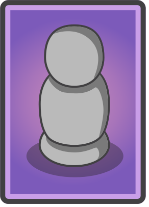
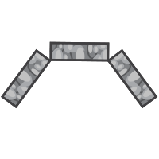

Faiyaz Choudhury
Data analyst with experience in marketing analytics and operations. Skilled at automating workflows and improving business processes through data-driven solutions. Strong background in developing analytical tools and facilitating cross-functional collaboration.

Professional Experience
Marketing Data Analyst
PLC Group | Mississauga, ON | May '23—Aug '23
- Automated workflows on CRM platforms including HubSpot and Infotelligent to enhance internal workflows, reducing reporting overhead by 20%
- Redesigned website as a marketing landing page resulting in a 25% increase in sales leads
- Improved cross-functional collaboration between sales and engineering by introducing structured rituals for requirement gathering and prioritization
- Managed logistics for international trade shows including MWC Vegas 2023 and Africa Con 2023
Operations Intern
Yunus Centre for Social Business | Remote | May '20—Aug '21
- Collaborated with global team to revamp the impact assessment frameworks for social business projects across Bangladesh
- Facilitated virtual workshops reaching over 200 entrepreneurs across 15 countries
Stock Comparison Tool
Personal Project
- Created a tool using Python to compare stock performance against index funds
- Implemented analysis over multiple time periods (1mo to 10yr)
- Supported stocks from NYSE, NASDAQ, and TSX exchanges
Skills & Expertise
Technical Skills
- Python Data Analysis
- CRM Platforms (HubSpot)
- Web Analytics
- Process Automation
Core Competencies
- Data Visualization
- Project Management
- Cross-functional Collaboration
- Workshop Facilitation
VP
Education
Bachelor of Science in Data Science
Wilfrid Laurier University